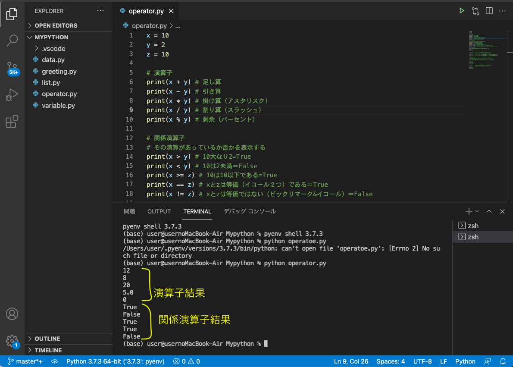
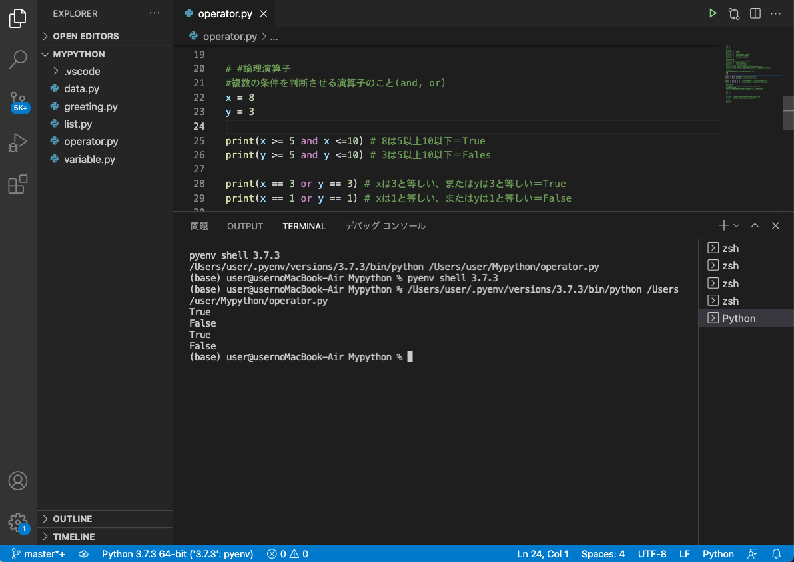
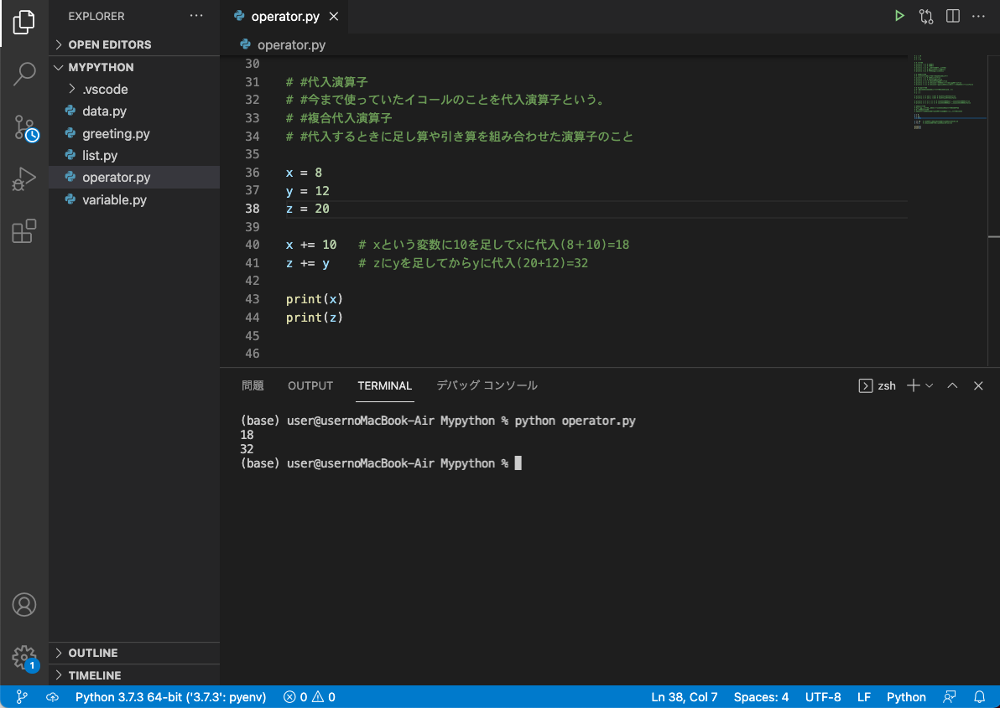
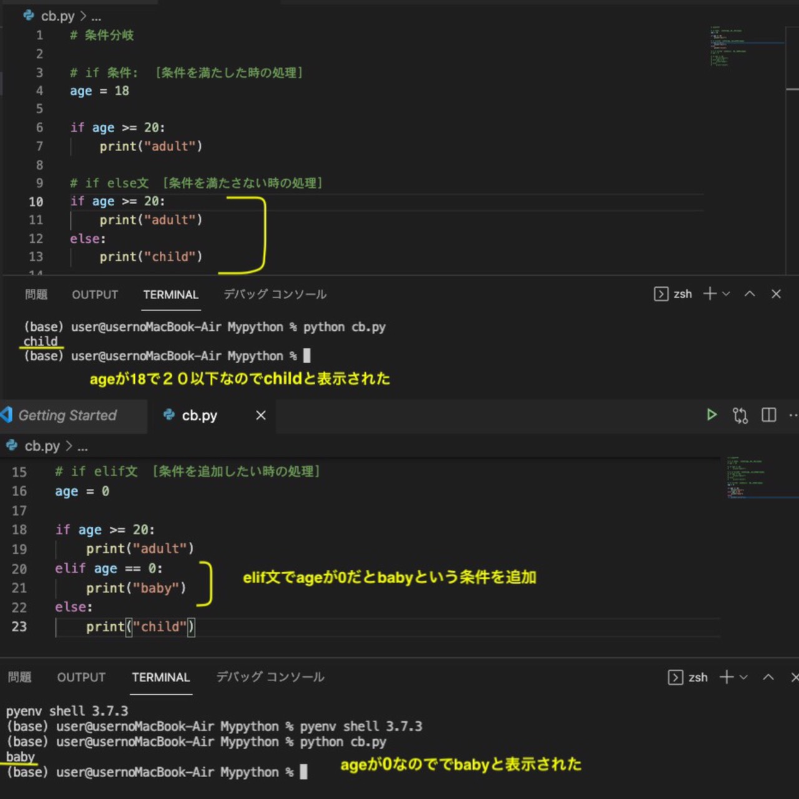
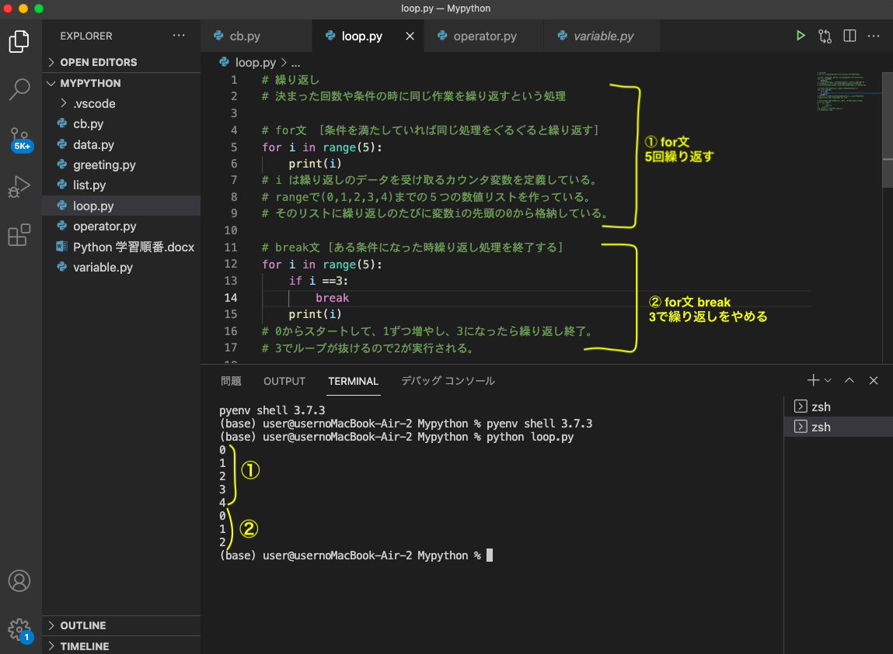
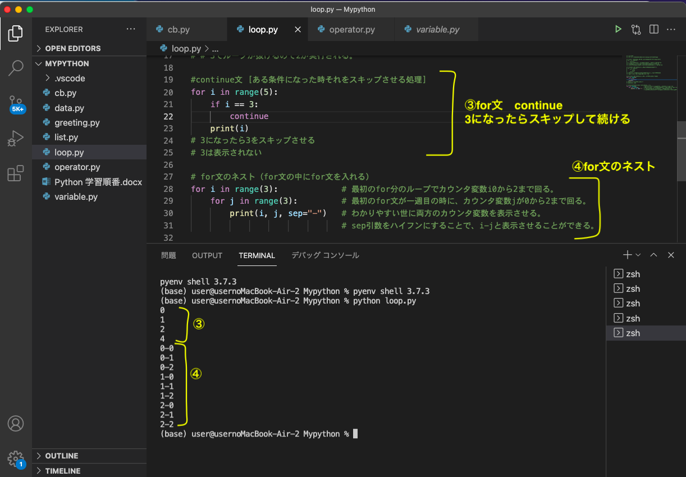
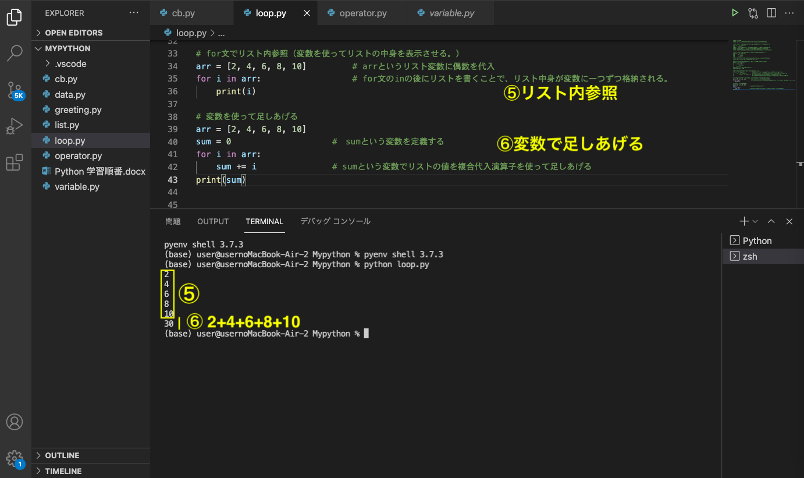

Pythonの基本を学習する
[]
ここでは、Python入門①の続きをまとめる
画像内のコメントアウトしているところ(緑の#のところ)に詳しい説明あり
⑥演算子
1.演算子と関係演算子
関係演算子とはその演算があっているか間違っているか(True or False)判別する

2.論理演算子
複数の条件を判断させる演算子のこと(and, or)

3.代入演算子
今まで使っていたイコールを代入演算子という。
複合代入演算子とは、代入するときに足し算や引き算を組み合わせた演算のこと。

⑦条件分岐
if文 [条件を満たした時の処理]
if else文 [条件を満たしていない時の処理]
if elif文 [条件を追加したい時の処理]

⑧繰り返し
1.for文 [条件を満たしていれば同じ作業を繰り返す]
2.for break文 [ある条件になった時に繰り返しをやめる]

3.for continue文 [ある条件になった時にその条件だけをスキップする]
4.for文のネスト [for文のなかにfor文を入れて、二つの繰り返しを同時に行う。]

5.リスト内を参照する
6.変数で足しあげる [複合代入演算子を使う]
